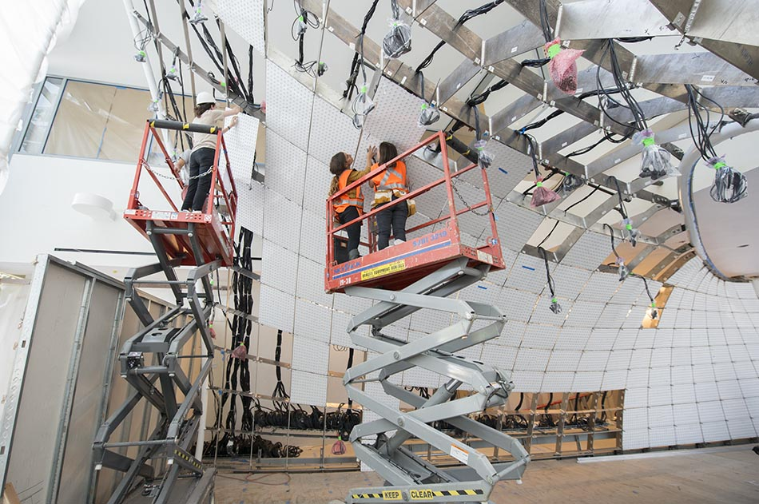

Aurora
A giant interactive sculpture
The entrance to Aurora
Aurora is a large interactive sculpture that I helped construct while working at Electroland. It comprises 47,000 LEDs that are diffused by 600 panels. Viewers' movements through the space are tracked by depth cameras and this information is used as an input to a program that generates an ambient flow of light.
The construction of Aurora

An optimized set of panels to be cut via water jet
One of my main contributions to the project was optimizing the CNC fabrication we had done. The LEDs snapped into panels which in turn snapped into a skeleton system. Because each panel had unique dimensions, it was a challenge to get them waterjet cut efficiently without wasting too much material. The CAD program used by the architects to design the structure had a built in operation for packing the 2D shapes into the smallest possible footprint but it was too naive for our purposes. It simply squeezed shapes that were already close so that the margins between them would decrease to a defined size. It wasn’t able to split them into batches based on a pre-defined raw material size and wasn’t able to rearrange the shapes’ relationships to each other for better packing. The script I wrote solved these problems. The challenge seemed similar to something like the traveling salesperson problem so I figured it was NP-hard and wouldn’t have a solution that could be proven as completely optimized. Using this heuristic framework I wrote an evolutionary algorithm that shuffled all the panels, packed them into rectangles whose dimensions matched our aluminum sheets, kept only the most efficient combinations, and repeated the process with the remaining pieces. This ended up reducing the number of sheets that we would need to purchase and have cut by about 30% compared to the program’s built in operation. Small numbers and arrows were cut into the sheets to allow them to easily find their home once they were transported to their final location.